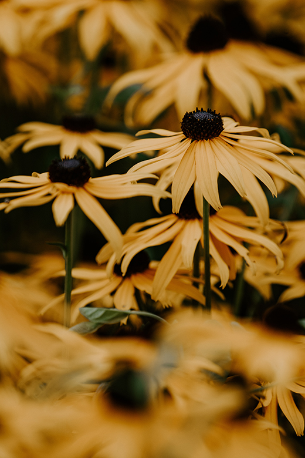

Rudbeckia Hirta the "black-eyed susan
Wildflowers are increasingly popular in gardens across the United States. They're relatively easy to grow and care for and create an incredible palette of colors, textures, and foliage throughout the summer months. Some wildflowers have medicinal uses, while others are merely pretty. While it's ideal to select wildflowers that are indigenous to your region, it's often acceptable to select non-native plants if they are unlikely to become invasive. If ever a plant needed a common name, it's Rudbeckia hirta, better known as "black-eyed Susan." This plant is just too pretty and cheerful a plant to be called by its mouthful of a botanical name. A wildflower native to eastern North America, black-eyed Susans share the Rudbeckia genus name with gloriosa daisies.